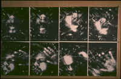

Michael Karl (Ritchie)
Survival Japanese
1. Koenkai
Bow, jump through hoops: nets
of nepotism and quid
pro quo dredge up votes
from club members.
Factions splinter and reform
fractal government.
Cut off the head, paint
one eye now, and the other
winks when you win. Grin!
2. Kashi-Shiburi
Then bankers believed
government supports sanctioned
risky investments.
Their bubble burst. Down
went stocks, yen, and reluctance
to loan crunched credit.
But if exports drown
in excess capacity,
whom will you sell to?
3. I Chi Go I Chi E
After bullet trains
what samurai would not want
flowers, scroll, tea?
Unsaid, respect for
the moment that will not come
again: turn the cup.
Then koto and flute
stop, due to San Diego
State construction drills.
4. Momo No Aware
Moment by moment
each beautiful crystal melts,
cherry blossoms watch
the body weaken,
children grow up and leave home,
change makes life tragic
even for the good,
and wind rattled the bamboo
inevitably.
|

(Thomas Fernandez) |
 ‚Üê Back to MarckBeggs.com | Arkansas Literary Forum archive, preserved as originally published
‚Üê Back to MarckBeggs.com | Arkansas Literary Forum archive, preserved as originally published{kind=link}